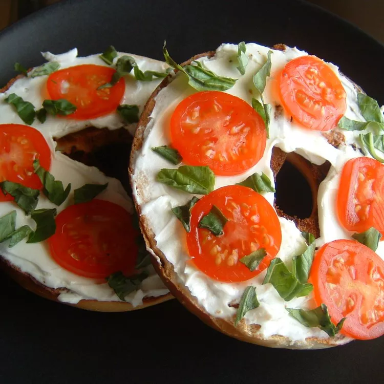

Bagel Sandwich

Description
This tomato bagel is a pleasant breakfast treat. It's easy to prepare and totally portable!
Ingredients
- 1 bagel, split and toasted
- 2 tablespoons cream cheese
- 1 roma (plum) tomatoes, thinly sliced
- salt and pepper to taste
- 4 leaves fresh basil
Steps
- Spread cream cheese on bagel halves. Top cream cheese with tomato slices.
Sprinkle with salt and pepper. Top with fresh basil leaves.